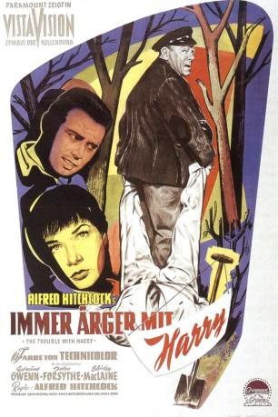

#2647 Hitchcock - Immer Ärger mit Harry
Alternativ: The Trouble with Harry
Auszeichnungen: 1 GoldenGlobes gewonnen
 
 IMDB-Wertung: 7.1 / 10
IMDB-Wertung: 7.1 / 10  Metascore: 74
Metascore: 74 
Ein sonniger Herbsttag in den bunt verfärbten Wäldern von Vermont. Albert Wiles, pensionierter Kapitän auf Hasenjagd, entdeckt auf einer Lichtung die Leiche eines Fremden. Überzeugt, dass eine seiner Kugeln den Mann getroffen hat, macht sich der Captain an die Beseitigung der Leiche. Dabei wird er immer wieder unterbrochen. Miss Gravely, die Jungfer des Dorfes, und Jennifer, formal die Ehefrau des Toten, glauben, am Tod von Harry Worp Schuld zu sein. Doch kaum ist Worp unter der Erde, da muss er auch schon wieder ausgegraben werden ...
Jahr: 1955
Dauer: 99 Minuten
FSK: 12
Land: USA Studio: A Paramount ReleaseTonspuren:
Untertitel: Deutsch,
Auflösung: 1080p (1920x1040) Größe: 7833 MB
Genre: Mystery
Regisseur:  Alfred Hitchcock
Alfred Hitchcock
Drehbuch: John Michael Hayes, Jack Trevor Story
Soundtrack: Bernard Herrmann
Darsteller:
 Edmund Gwenn als Capt. Albert Wiles
Edmund Gwenn als Capt. Albert Wiles John Forsythe als Sam Marlowe
John Forsythe als Sam Marlowe Mildred Natwick als Miss Ivy Gravely
Mildred Natwick als Miss Ivy Gravely- Mildred Dunnock als Mrs. Wiggs
- Jerry Mathers als Arnie Rogers
 Royal Dano als Deputy Sheriff Calvin Wiggs
Royal Dano als Deputy Sheriff Calvin Wiggs Shirley MacLaine als Jennifer Rogers
Shirley MacLaine als Jennifer Rogers Alfred Hitchcock als Man Walking Past Sam's Outdoor Exhibition , uncredited
Alfred Hitchcock als Man Walking Past Sam's Outdoor Exhibition , uncredited- Parker Fennelly als Millionaire
- Barry Macollum als Tramp
- Dwight Marfield als Dr. Greenbow
- Ernest Curt Bach als Ellis , uncredited
- Philip Truex als Harry Worp , uncredited
- Leslie Woolf als Art Critic from the Modern Museum , uncredited
Datei: X:\Person\Hitchcock\Hitchcock - Immer Ärger mit Harry (1955, FSK12, 1920x1040).mkv seit 30.11.2015
Festplatte: HD Collection-7+mehr(A-Z)+Person
 Es gibt insgesamt 25 Filme in der Gruppe 'Person\Hitchcock'
Es gibt insgesamt 25 Filme in der Gruppe 'Person\Hitchcock'